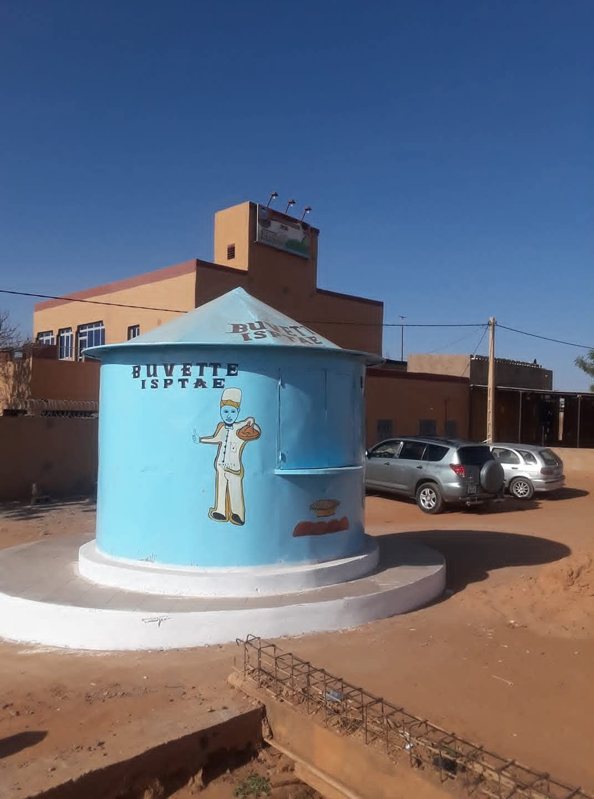
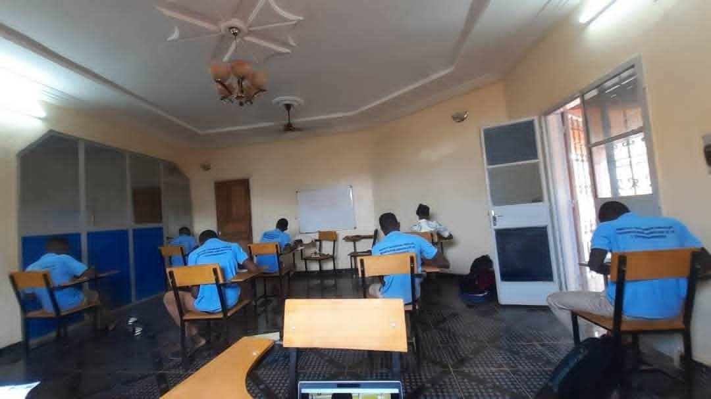
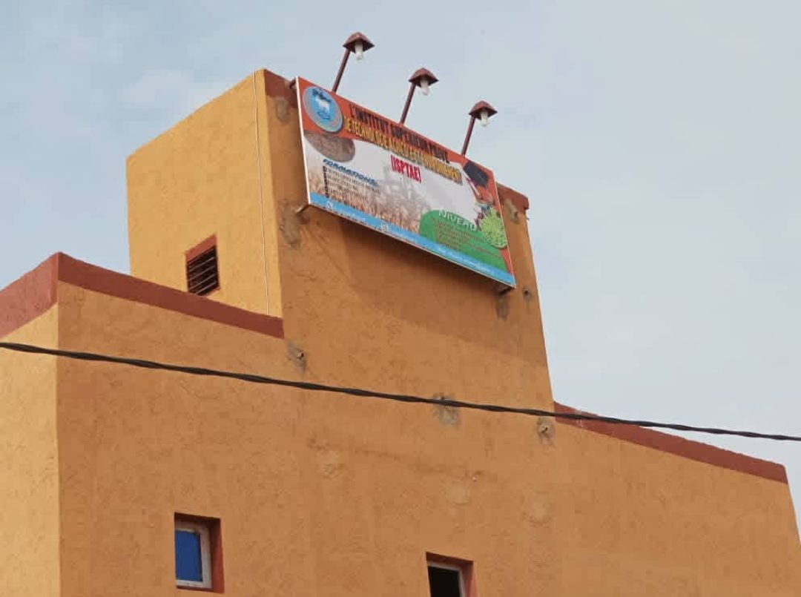
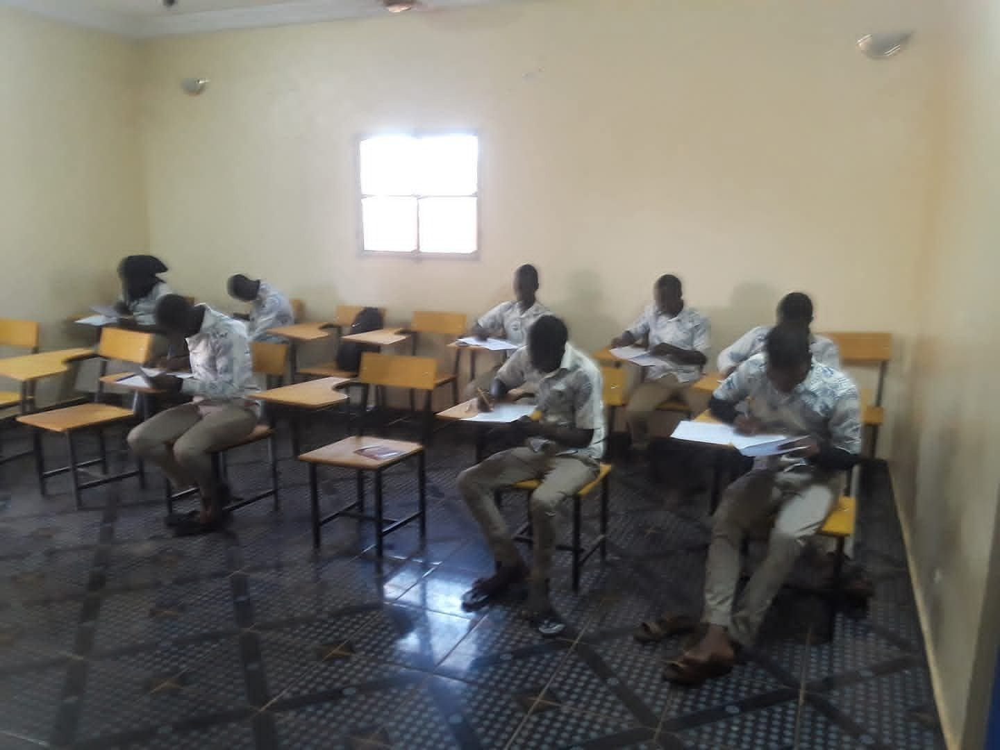
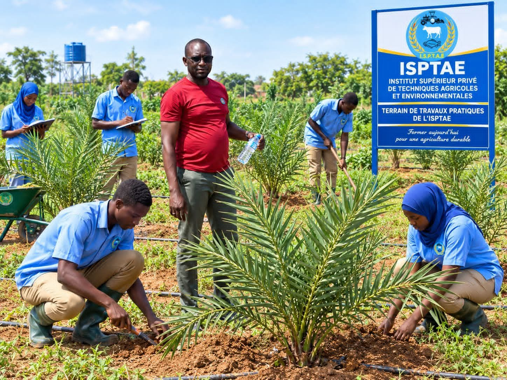
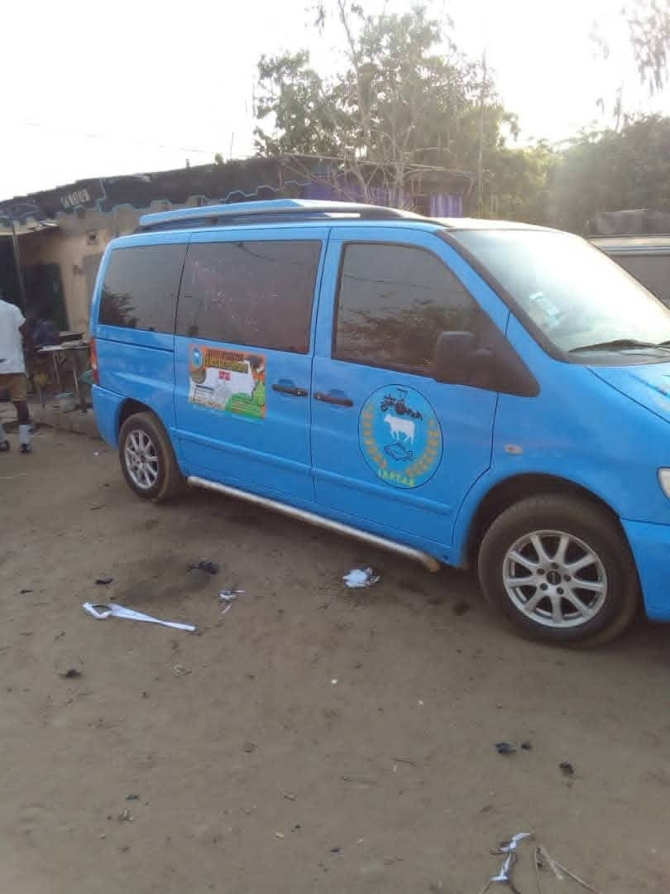

Agriculture
Production végétale, techniques culturales, irrigation et gestion des exploitations pour une agriculture productive et durable.
L’Institut Supérieur Privé de Technologie Agricole et d’Environnement forme les compétences de demain dans les domaines de l’agriculture, de l’élevage, de l’environnement, des eaux et forêts, du génie rural et de la socio-économie rurale.
Établissement supérieur privé agréé par le MESRI · Niamey, Niger
Agriculture · Élevage · Environnement · Eaux & Forêts · Génie rural · Socio-économie rurale



Notre campus
Établissement supérieur privé agréé par le Ministère de l’Enseignement Supérieur, de la Recherche et de l’Innovation (MESRI), l’ISPTAE prépare des professionnels et des cadres aux métiers du développement rural, agricole et environnemental, en associant enseignement théorique et apprentissage sur le terrain.
Notre objectif« Former des cadres compétents de haut niveau dans les domaines du développement rural afin de relever les défis du développement durable dans un contexte de mondialisation. »
Chaque domaine prépare à des métiers concrets, au service des producteurs, des collectivités et des projets de développement.
Production végétale, techniques culturales, irrigation et gestion des exploitations pour une agriculture productive et durable.
Productions animales, alimentation, santé du cheptel et valorisation des produits d’élevage.
Gestion des ressources forestières, de la faune et des ressources en eau, et lutte contre la dégradation des terres.
Protection de l’environnement, gestion durable des ressources naturelles et adaptation aux changements climatiques.
Aménagements hydro-agricoles, ouvrages et équipements ruraux, mécanisation au service des exploitations.
Économie des filières, organisation des producteurs, vulgarisation et accompagnement des communautés rurales.
Cinq niveaux permettent à chacun d’entrer à l’ISPTAE selon son profil et de progresser jusqu’aux fonctions d’encadrement.
Cycle moyen · accès avec le BEPC · cours en journée
Cycle moyen · accès avec le BEPC · cours en journée
Accès avec le BAC · cours du soir, 16h–21h
Accès avec le BAC · cours du soir, 16h–21h
Accès avec la Licence · cours du soir, 17h–21h
Les cours théoriques et pratiques ont lieu en journée pour le cycle moyen et en soirée pour le Technicien Supérieur, la Licence et le Master.
Des programmes orientés vers les compétences attendues par les employeurs du secteur rural.
Des séances régulières sur le terrain d’application de l’institut pour maîtriser les gestes techniques.
Un cursus qui mène jusqu’à la Licence et au Master pour viser des postes de cadre.
Des formations ancrées dans les réalités agricoles et environnementales du Niger et du Sahel.
Plantation, entretien, suivi des cultures : les étudiants apprennent en faisant.
Des effectifs à taille humaine et un suivi de proximité, en classe comme sur le terrain.


À l’ISPTAE, la salle de classe se prolonge sur le terrain. Les cours théoriques sont complétés par des travaux pratiques sur le terrain d’application de l’institut : préparation du sol, plantation, irrigation, suivi des cultures. Chaque étudiant acquiert ainsi des compétences directement utilisables en milieu professionnel.
Salles de cours équipées, buvette sur place et véhicule de l’institut : le campus de Koubia accompagne les étudiants au quotidien.
Des salles lumineuses et ventilées, équipées de tables-bancs et de tableaux, pour les cours et les évaluations.
Un espace de restauration sur le campus pour se retrouver entre deux cours.
Un véhicule aux couleurs de l’ISPTAE pour les déplacements liés aux activités de l’institut.
Pantalon et jupe vert olive, chemise bleu ciel portant le logo de l’institut. Blouse kaki pour les travaux pratiques.
Vous souhaitez faire carrière dans le développement rural ? Voici comment déposer votre candidature.
« Ensemble construisons l’avenir de notre jeunesse »
Technicien Supérieur : Montant à confirmer
| Cycle | Nationaux | Étrangers | Organismes |
|---|---|---|---|
| Cycle moyen | 345 000 | 445 000 | 695 000 |
| Technicien Supérieur | 500 000 | 600 000 | 900 000 |
| Licence | 500 000 | 600 000 | 900 000 |
| Master 1 | 650 000 | 750 000 | 1 150 000 |
| Master 2 | 1 050 000 | 1 300 000 | 1 350 000 |
Montants en francs CFA (FCFA). Le tarif « Organismes » s’applique aux étudiants pris en charge par une structure.
Les frais versés ne sont pas remboursables.
Communiqués, inscriptions, vie académique et travaux pratiques : retrouvez ici les annonces officielles de l’ISPTAE.
Le calendrier et les modalités d’inscription seront annoncés ici.
Retour en images sur les travaux pratiques des étudiants.
Emplois du temps et périodes d’examens, mis à jour par l’administration.
Créé par l’arrêté N°141 et ouvert par l’arrêté N°131 du MESRI en octobre 2018.
Siège : quartier Koubia, en face de la station Oriba, sur la route de Tillabéri, en allant vers l’ancien poste de police
Niamey, Niger